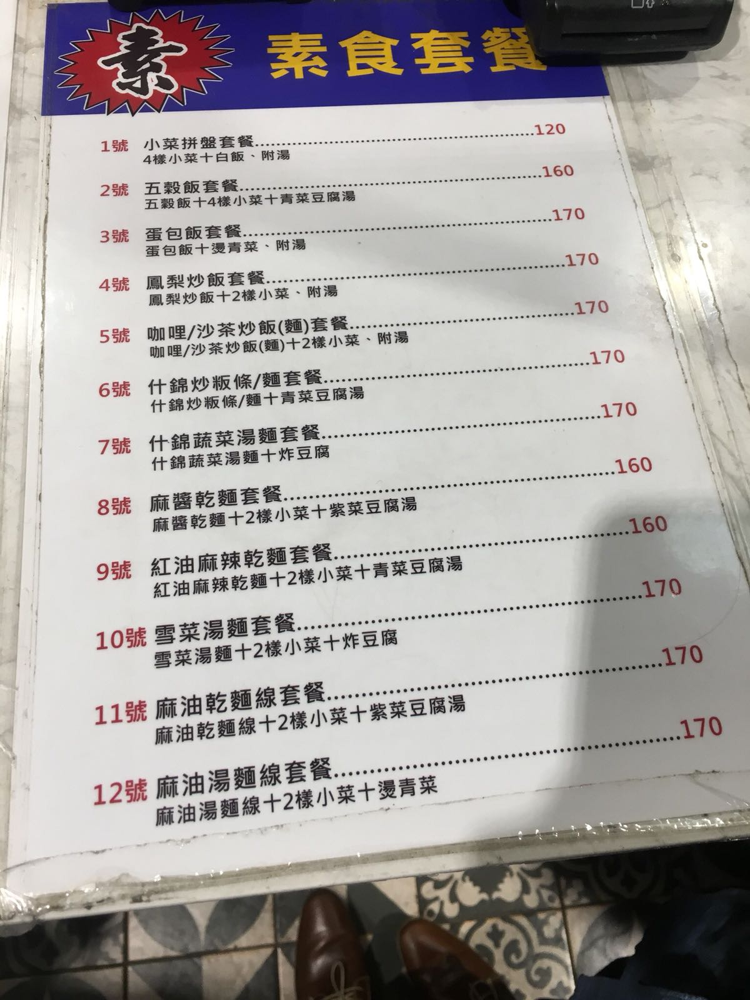

There is a lot of Chinese language in Taiwan!
In India, in big cities, we are used to seeing English everywhere: names of shops, notice boards, newpapers, menus in restuarants, and so on. People do SMS in English. When I am talking to my friends, or even my wife, I use a mixture of Hindi and English.
Not so in Taiwan. While the signage on the roads and metros is in both Chinese and English, a small fraction of signages of shops are in English. I am yet to see a English newspaper. I see people messaging each other in metro, always in Chinese and never in English. I once went to a bookstore, and all the books were in Chinese. There were plenty of book which were translation of English books. Menu in restaurants can sometimes be both in Chinese and English, but more usually it is Chinese only, like this:
My colleague told me that school education is in Chinese (with English being one subject), and even at univerisities, medium of instruction is Chinese. These is in contrast to India where medium of instruction at most good engineering colleages is English.
When you make a telephone someone, and phone is switched off, in India, you get a message in 2 or 3 languages, which includes English. Here, you get it only in Chinese.
Discussions and meetings too were in Chinese, thought now, the meetings in which non Chinese participants are present are held in English. I can imagine this must be causing some cognitive load to Chinese engineers. I have heard that lots of documentation too is in Chinese!